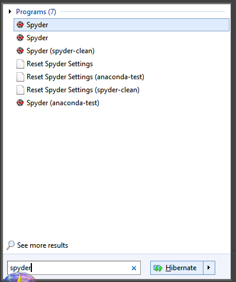
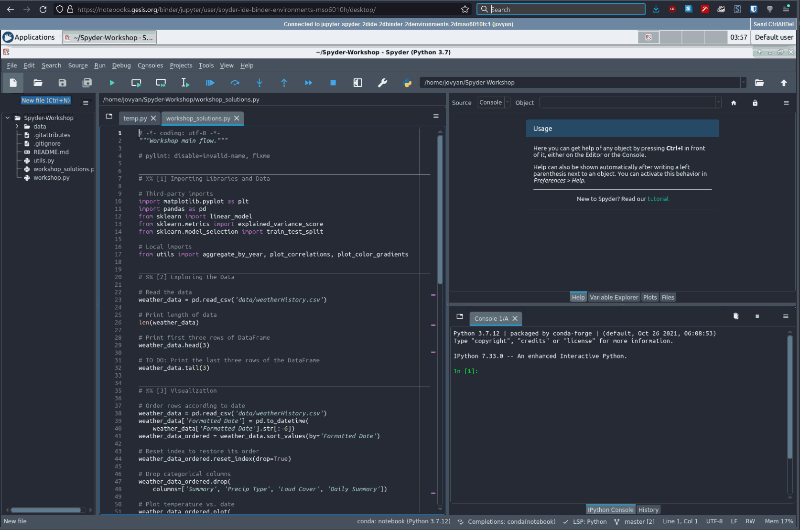
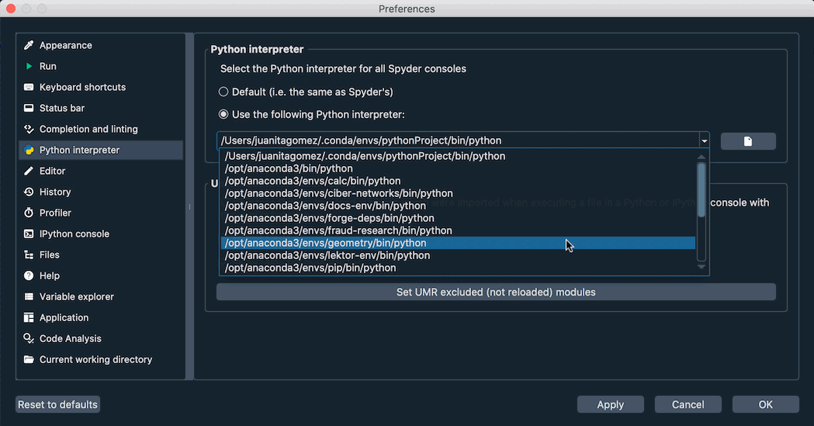
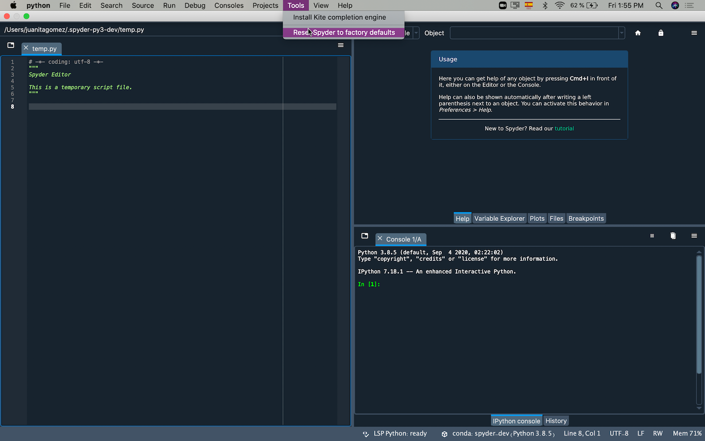
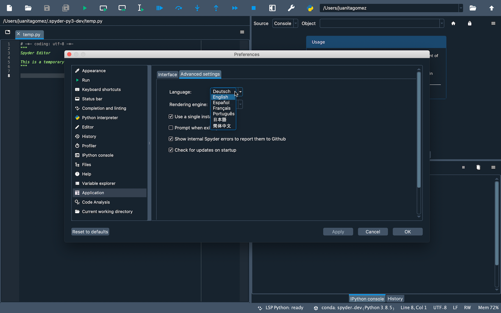
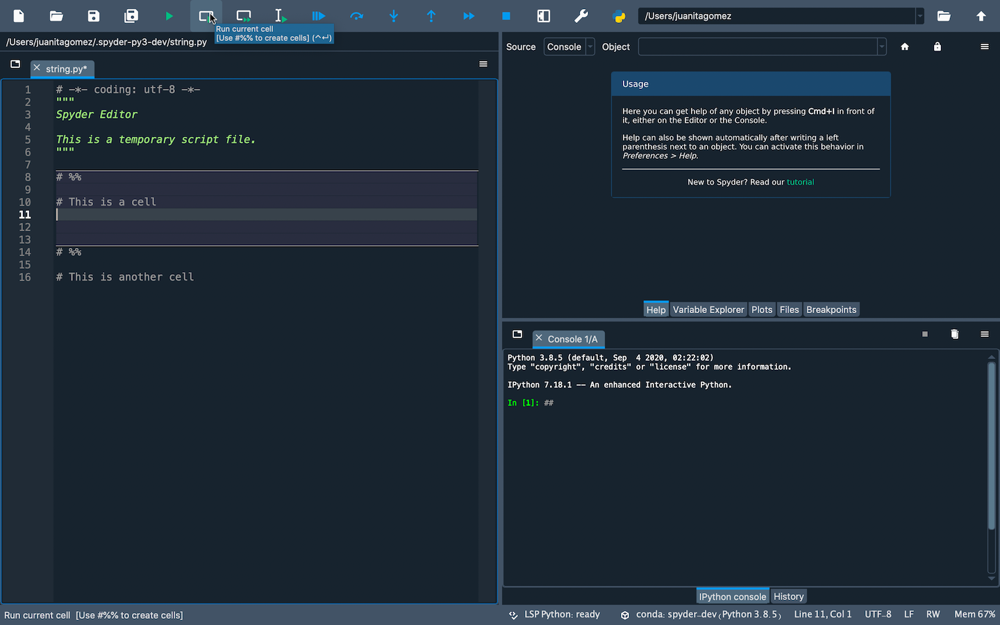
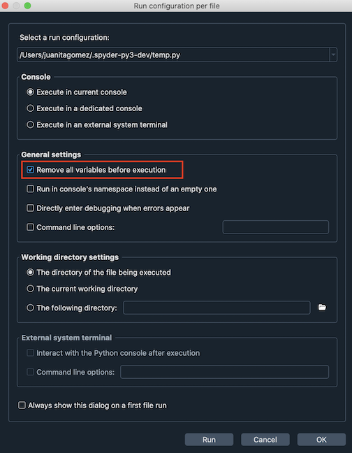
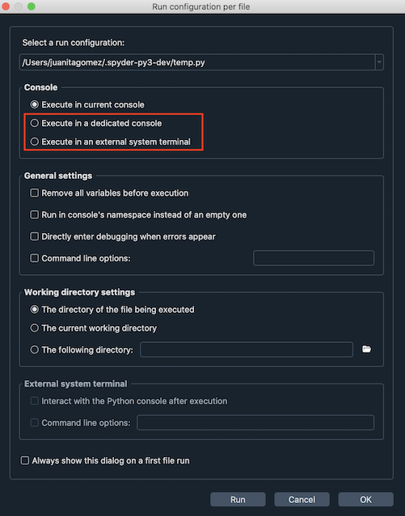
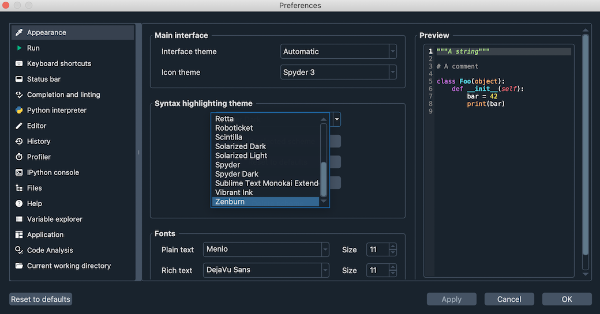

Preguntas frecuentes (FAQ)#
Instalar y actualizar#
P: ¿Cómo puedo instalar Spyder?
The easiest way to use Spyder is with our standalone installer, which comes with everything you need to get started in an all-in-one package. Download it from the Spyder Download Page.
For more information, visit our Guía de instalación.
P: ¿Cómo puedo instalar Spyder en el Windows Subsystem for Linux 2 (WSL2)?
If you already installed Spyder on your Windows machine, you do not need to reinstall it on a WSL2-based Linux environment to run your code there.
Instead, just create a new Conda or venv/virtualenv environment (using system Python without a venv is not recommended), then install Spyder-Kernels into that environment with e.g. conda install spyder-kernels.
Nota
Windows crea una ruta de red ubicada en \\wsl$ que apunta a las particiones de sus máquinas WSL2, por ejemplo, \\wsl$\Ubuntu-20. 4. Debes mapear una letra de unidad de red a la ruta de su máquina, por ejemplo W:, para que Spyder vea correctamente sus archivos y carpetas.
Para iniciar un kernel de Spyder, desde tu terminal Linux ejecuta
python -m spyder_kernels.console --matplotlib="inline" --ip=127.0.0.1 -f=~/remotemachine.json &
Esto ejecutará el kernel como un subproceso y creará un archivo llamado remotemachine.json en su carpeta de inicio WSL.
Finally, under the options menu of Spyder’s Terminal de IPython, select Connect to existing kernel as described in Usar núcleos externos.
Insert the absolute path of remotemachine.json into the Connection file field.
If you mapped W: as mentioned in above note, the path should be W:/home/username/remotemachine.json.
A new console will open in Spyder, running in the Linux environment.
Try running !ls -la and see if it lists your WSL home folder.
If you run exit() from Spyder, the kernel running on Linux will be stopped.
Q: How do I update Spyder using the standalone installer?
An updater is built right into the standalone-installed Spyder, and will check for updates when starting the application and prompt you when one is available. You can also trigger an on-demand check for updates via . Simply click through the prompts to confirm and install the update.
P: ¿Cómo puedo actualizar Spyder utilizando conda?
From the command line (or Anaconda Prompt on Windows), run:
conda update anaconda # ONLY IF USING THE ANACONDA BASE ENVIRONMENT
conda update spyder
Si esto da como resultado un error o no actualiza Spyder a la última versión, intenta:
conda install spyder=6
Lanzar Spyder#
P: ¿Cómo puedo ejecutar Spyder?
With Spyder installed standalone (recommended) or via a Conda-based method, a shortcut is created so you can run it right from your normal operating system application launcher (the Start menu on Windows, Spotlight/the Applications folder on macOS, or your distro’s launcher on Linux). Your operating system will typically allow you to pin this shortcut for even quicker access (to the Taskbar on Windows, the Dock on macOS or your distro’s quick launcher on Linux). If installed via Conda in its own environment, the shortcut will have the environment name in its title, and multiple shortcuts for different Spyder environments may be available.

P: ¿Puedo ensayar Spyder sin instalarlo?
Yes! With Binder, you can work with a fully functional copy of Spyder that runs right in your web browser. Visit the Spyder Binder page to get started.
Prudencia
This is a temporary environment, and any code or data you create will be lost once you close your browser tab or navigate away from the page.

P: ¿Cuáles son los requisitos del sistema para Spyder? ¿Qué tan intensivo es su uso de recursos?
Spyder works on modern versions of Windows, macOS and Linux (see the table below for recommended versions). It typically uses relatively minimal CPU when idle, and 0.5 GB - 1 GB of RAM, depending on how long you’ve been using it and how many files, projects, panes and consoles you have open. It should work on any system with a dual-core or better x64 processor and at least 4 GB of RAM, although 8 GB is strongly recommended for best performance when running other applications. The code you run, such as scientific computations and deep learning models, may require additional resources beyond this baseline for Spyder itself.
Sistema operativo |
Versión |
|---|---|
Windows |
Windows 10 |
macOS (Intel) |
Ventura (13) |
macOS (M1+) |
Sonoma (14) |
Linux |
Ubuntu 22.04 |
Q: How do I run Spyder installed in an environment using the command line?
If necessary, activate the environment Spyder was installed in by typing the appropriate command in your terminal (or Anaconda Prompt on Windows); for example, with Conda:
conda activate ENVIRONMENT-NAME
Luego, escribe spyder para lanzar la versión instalada en ese entorno.
Usar Spyder#
Q: How do I install Python packages to use within Spyder if I installed Spyder with Conda?
El primer método para instalar un paquete debería ser usar conda. En tu terminal del sistema (o en el Anaconda Prompt en Windows), escribe:
conda install <PACKAGE-NAME>
Si la instalación no se ha realizado correctamente, sigue los pasos 3 a 5 de la Parte 2 en nuestro vídeo sobre la resolución y prevención de problemas con pip, Conda y Conda-Forge.
P: ¿Cómo hago que Spyder funcione con mi entorno o paquetes de Python existentes?
You can open a new console in an existing Conda or Pyenv environment using the New console in environment submenu of the Consoles menu or the tab context menu of the Terminal de IPython pane.
You can manually add other virtual environments not located at standard paths, as well as change the default environment for new Terminal de IPythons, in the Python interpreter section of Spyder’s Preferences. This can be quickly accessed by clicking the current environment name in Spyder’s status bar, then Change default environment in Preferences…. Here, click the option Select interpreter and use the dropdown below to select your preferred environment. If it’s not listed, see the note below.

Nota
If you installed a Conda-based distribution to a non-standard path, or are using a virtual environment managed by a tool other than pyenv, your environments likely won’t be listed by default.
For the former, you can specify the path to the Conda/Mamba executable under in the Python interpreter section of Spyder’s Preferences.
It is located at BASE INSTALL DIRECTORY/Scripts/conda.exe on Windows, and BASE INSTALL DIRECTORY/bin/conda on other platforms.
Otherwise, use the text box or the Select file button to manually add the path to the Python interpreter you want to use. You can find this path by activating the venv or Conda env you want to use in your terminal (Anaconda Prompt on Windows), and running the command:
python -c "import sys; print(sys.executable)"
Finally, click Restart kernel in the Consoles menu for this change to take effect.
If spyder-kernels is not already installed or outdated, the Terminal de IPython will display instructions on how to install the right version (or offer to install it automatically, on Spyder 6.2+).
Execute the given command in your terminal (the Anaconda Prompt on Windows) with the environment activated, and finally restart the kernel once more.
P: ¿Cómo puedo instalar paquetes de Python para usarlos en Spyder si descargué los instaladores independientes?
Ve nuestro vídeo sobre el uso de paquetes adicionales o sigue las instrucciones que aparecen a continuación.
If you want to use other packages in Spyder that don’t come with our installer, you need to have your own Python distribution installed; we recommend Miniforge or another Conda-based option. For Spyder to recognize your environments automatically without manual configuration, you should use a Conda-based distribution with its default install path.
Create a new Conda environment containing spyder-kernels and the packages that you want to use.
For example, if you want to use scikit-learn, open your terminal (or Anaconda Prompt on Windows) and run the following command:
conda create -n my-env -c conda-forge spyder-kernels scikit-learn
Finally, you can open a console in the my-env environment by selecting it in the New console in environment submenu of the Consoles menu or the tab context menu of the Terminal de IPython pane.
You can also change Spyder’s default Python interpreter for new consoles following the instructions in the above answer.
P: ¿Cómo puedo usar plugins en Spyder (por ejemplo, Spyder-Notebook, Spyder-Terminal, Spyder-Unittest)?
First, you currently need to have Spyder installed in your own Conda or virtual environment, not via our standalone installer (this limitation will be removed in Spyder 6.2, which will feature a built-in graphical plugin manager).
A Conda-based install is strongly recommended; Spyder plugins are available in the conda-forge conda channel.
To install one, activate the environment in which you installed Spyder, and type the following on in your system terminal (or Anaconda Prompt on Windows):
conda install -c conda-forge PLUGIN
Replace PLUGIN with the name of the plugin you want to use.
For more information on a specific plugin, go to the its repository:
P: ¿Cómo restauro las preferencias de Spyder a sus valores por defecto?
Do one of the following:
Select Reset all preferences to defaults under Tools in Spyder’s menu bar
Open Reset Spyder 6 to default settings operating system shortcut if available (e.g. in the Start menu on Windows)
Run
spyder --resetin your system terminal (Anaconda Prompt on Windows) after activating the environment Spyder is installed in.

P: ¿Cómo puedo cambiar el lenguaje de Spyder?
Under Application in Spyder’s Preferences, go to the Advanced settings tab and select your language from the options displayed under Language.

P: ¿Cómo puedo usar las celdas de código en Spyder?
To create a cell in Spyder’s Editor, type # %% (or #%%`) in your script.
Each ``# %% will make a new cell.
To run a cell, press Shift-Enter (while your cursor is focused on it) or use the Run current cell button in Spyder’s toolbar.

P: ¿Cómo puedo eliminar todas las variables antes de ejecutar mi código?
Check the option Remove all variables before execution of the Configuration per file dialog under the Run menu.

Q: How do I run my code in a dedicated console or control other run settings?
Select the appropriate option in the Custom configuration section of the Configuration per file dialog under the Run menu, or configure global defaults for all files in the Run pane of Spyder’s Preferences.
If you want to quickly switch between multiple groups of settings, you can save them to separate presets by setting a different Name under Configuration properties.

Q: How do I run my code in an external terminal?
As of Spyder 6, there is now a dedicated Run in external terminal item in the Run menu to do just that. You can also now set separate external terminal-specific run configuration options for the current file by selecting the corresponding Runner in the Run configuration per file dialog, and for all files in the Run entry in Spyder’s Preferences.
P: ¿Cómo puedo cambiar el tema de coloreado de sintaxis en el Editor?
Go to Preferences and select the theme you want under Syntax highlighting theme in the Appearance section. You can also change Spyder’s global interface theme (light or dark) under Interface theme in that same preferences pane.

Solución de problemas#
P: He encontrado un error o problema en Spyder. ¿Qué puedo hacer?
You should first follow the steps in our troubleshooting guide. If you can’t solve your problem, open an issue by following the instructions in the Enviar un reporte section.
P: ¡Tengo un error en la terminal IPython al ejecutar mi código! ¡Ayuda!
First, make sure the error you are seeing is not a bug in your code. To confirm this, try running it in any standard Python interpreter. If the error still occurs, the problem is likely with your code and a site like Stack Overflow might be the best place to start. Otherwise, start at the Primera ayuda básica section of our troubleshooting guide.
P: El completado de código o la ayuda no funcionan; ¿qué puedo hacer?
If nothing is displayed in the calltip, hover hint or Ayuda pane, make sure the object you are inspecting has a docstring, and try executing your code in the Terminal de IPython to get help and completions there. If this doesn’t work, try restarting the LSP server by clicking the LSP: Python item in the status bar at the bottom of Spyder’s main window, and selecting the Restart Python Language Server option.
For more information, go to the El autocompletado o la ayuda no funcionan section in the Problemas comunes page of our troubleshooting guide.
P: Recibí el mensaje «Ocurrió un error mientras iniciaba el núcleo». ¿Cómo puedo arreglarlo?
First, make sure your version of Spyder-Kernels is compatible with that of Spyder. See the table in the Spyder-Kernels no está instalado o es incompatible section of the troubleshooting guide to check.
To install the correct version, copy the suggested command Spyder displays for you in the error message and run it in a system terminal (Anaconda Prompt on Windows if using Conda) with the Python environment you want to use activated.
For more information, go to the Errores al iniciar el núcleo section in the Problemas comunes page of our troubleshooting guide.
Acerca de Spyder#
P: ¿Cuál es la situación de licenciamiento de Spyder? ¿Está permitido su uso comercial?
Spyder is 100% free and open source; there is no paid version or prohibition on commercial use. It is developed by its international user community, and supported by its users through OpenCollective and by its generous sponsoring organizations, including Quansight and NumFOCUS. Our source code, standalone installers and most of our distribution methods (Pip/PyPI, Linux distros, MacPorts, WinPython, etc) can be freely redistributed, used and modified by anyone, for any purpose, including commercial use. For more details about the situation with Anaconda, see Q: What does Anaconda’s commercial licensing restrictions mean for Spyder?.
Q: What does Anaconda’s commercial licensing restrictions mean for Spyder?
If you installed Spyder via any method other than the Anaconda or Miniconda distributions, or install it from the conda-forge channel with those two distributions, you are not affected by any restrictions.
If you use a copy of Spyder installed by default with the Anaconda distribution, or installed from the defaults/anaconda channel, Anaconda’s Terms of Service have restrictions on larger (>200 employee) for-profit enterprises on a large scale.
However, these terms only apply to the package infrastructure (the full Anaconda distribution and the defaults conda channel).
Instead, you can simply download the similar Miniforge distribution, which is 100% open source and nearly identical to Miniconda (and only different from Anaconda in that it does not bundle the Python packages installed by default in the Anaconda base environment, which we recommend you avoid using anyway given any problems in it can break your whole installation).
Then, simply install the packages you need (including Spyder, if you aren’t using our recommended Instaladores independientes) with conda as you usually do.
Miniforge will automatically use the community-maintained Conda-Forge repository, which has a much wider variety of packages and is generally more up to date than the Anaconda equivalent, in addition to being free of any commercial restrictions.
For more, see our Guía de instalación.